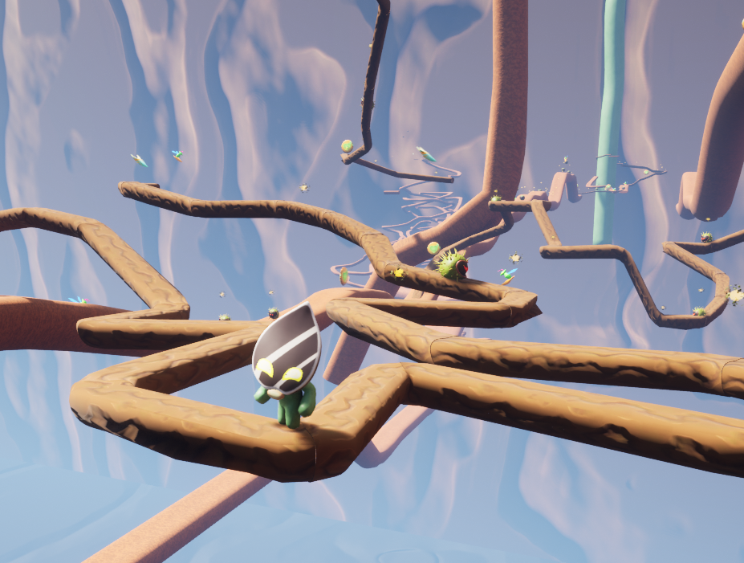

2.5D Platformer made in Unreal Engine 5 in a team of 6 people over 48 hours for The Global Game Jam 2023

Teamwork
The Sunflower Tower was my first real group project, and it came with a new set of challenges. The first important skill that I learned was using Git correctly, while working with other people at the same time. I wasn’t the only person in the team that was only starting their long journey with team work, and because of that we had some issues to overcome. Working on this project has taught me how to manage files in a shared repository and how to work together, communicating with other team members. That being said, none of those skills could be learned without some minor slip ups, accidental file deletion, or a few small technical issues.
Working with Unreal Engine 5
At the time of working on the project I was still new to working with Unreal, having only experienced it through university coursework. Finishing up a complete project has proven to be a much different experience, that required a lot of time not only to work on, but also to expand my skills. Thanks to this project, I have learned how to use blueprint more efficiently and how to use C++ with Unreal Engine.
My Role in the Project
Being one of the 2 main programmers in the team, I have taken the role of the main developer for the player character. The concept of the game required some unique mechanics that needed to be put in place. The game was envisioned as a 2.5D platformer, that is a game which plays very much like a 2D game, but takes place in a three dimensional environment. That by itself required some peculiar setup, for while it is easy to simply tie the player character to a single axis, the concept we had was a bit different. Rather than having the game world be a slice of a 3D environment, we decided to have the character move in three dimensions, tied to a specific path. This allowed us to get a lot more creative with the theme of the game jam being “Roots”. With a system like that, the character could move along a tangled up path made of roots.
The Spline Movement System
In order to achieve that, I have created a custom spline movement system that could keep the player on the track and rotate the camera appropriately. The big issue that arose soon was trying to get it to work with angled splines, as we also used the same splines to generate the branches that the player would move on. I have solved it by attaching a separate object to the player that would always stay precisely on the spline, with the horizontal position of the player being tied directly to it, allowing the player to jump independently of the splines, while staying on track.
The Aftermath
While the game may not have received any prestigious awards, I see it as a great success. Not only has it taught me a lot about working with Unreal, but also allowed me to work with amazing people. Get help from them, and help out myself where I could. While stressful at times, the project was a lot of fun to work on.